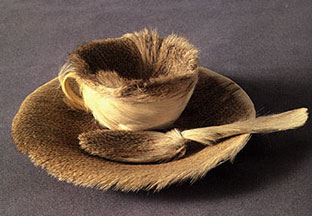
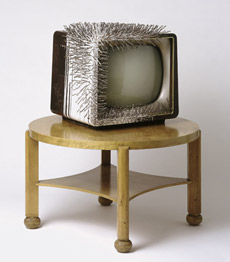
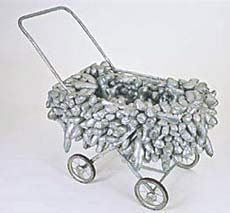
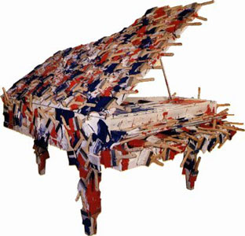
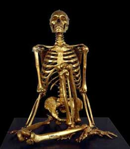
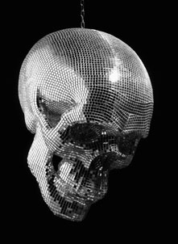
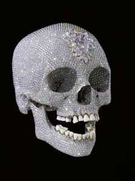

back to: things radical art
related genres: wrap cover-up paint
 Meret Oppenheim, 1936

Günther Uecker: TV auf Tisch, 1963
 Yayoi Kusama: Baby Carriage, 1964
 Arman: La Marseilleise, 1989
 Michel Journiac: Contrat pour un Corps # 3, 1973
 Christoph Steinmeyer: Disco Inferno, 2002
 Damien Hirst: For the Love of God, 2008
more: covered objects by yayoi kusama
link: damien hirst comments on 9-11